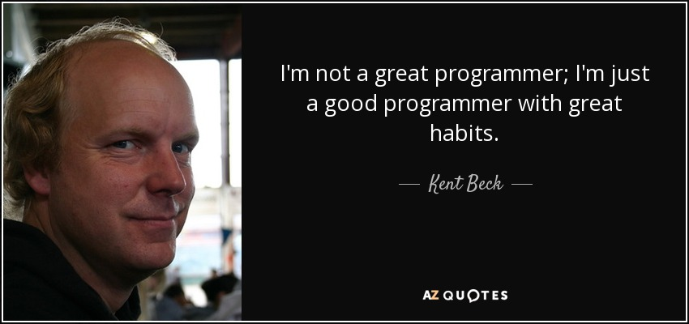
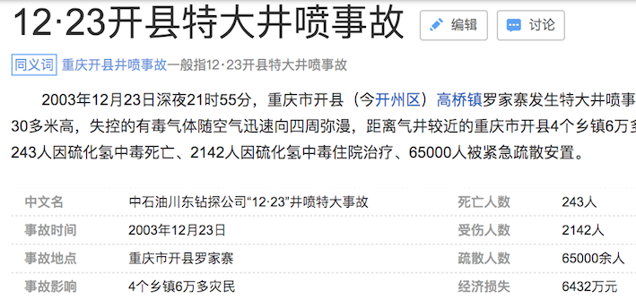
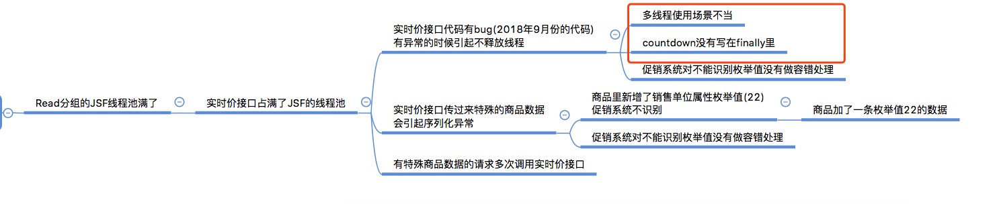
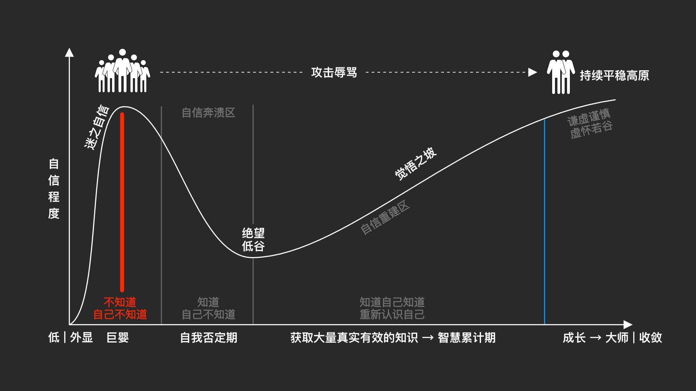

zhoujun5@jd.com
假设一个数用四位来表示
本文只涉及加减运算

世界阴阳并存
人分善恶，数有正负
计算机用二进制的规则表示自然数
那么如果是负数怎么表示呢？
最高位表示符号位,0为正数,1为负数
我觉得本质上符号位 就是为了解决计算机如何表示负数而出现的。
ps: 可以思考一下，为什么0是正数，1是负数？
其中运算器只有加法运算器(加、减、乘、除)
4+2=0100+0010=0110=6
4-2=4+(-2)=0100+1010=1110=-6
4-2=2+2-2
2-2=2+(-2)=0010+1010=-4
如果2-2等于0的话，那么结果是不是正确的？
怎么解决相反数相加不等于0的问题呢？
某一个负数是某一个正数的相反数，我们把这个正数全部按位取反来表示负数，这样相反数相加的结果就等于0了
这种表示方式叫反码
4-2=0100+1101=0001(反码)=0001=1
2-2=0010+1101=1111(反码)=1000=-0
-4-2=1011+1101=1000(反码)=1111=-7
-1-2=1110+1101=1011(反码)=1100=-4
如果符号位有进位的情况下，将进位加到结果的最后一位
存在负数的加法必定存在符号位进位
4-2=0100+1101=0001+1=0010=2 结果正确
-4-2=1011+1101=1000(反码)+1=1001(反码)=1110=-6 结果正确
-1-2=1110+1101=1011(反码)+1=1100(反码)=1011=-3 结果正确
2-2=0010+1101=1111(反码)+1=0000=0
那怎么办呢,怎么来解决负数的表示问题呢？


马浩文坐牢是不是怪他的徒弟大头？

重庆市第二中级人民法院以重大责任事故罪判分别处被告人吴斌有期徒刑六年；判处被告人王建东有期徒刑五年；判处被告人宋涛有期徒刑五年；判处被告人吴华有期徒刑四年；判处被告人向一明有期徒刑三年；判处被告人肖先素有期徒刑三年，宣告缓刑四年
== 而不是 equals我们要 找到正确的方法 坚持执行
然后我们拥有了伟大的习惯

根因分析

改进措施

100%地去坚守你的原则，总比98%坚持要容易，因为一旦有破例，就很容易为其它情况找理由。假如你越过这道防线一次，在今后可能将会一次又一次地越过这道防线。你必须给你自己的原则做个定义，然后以你的原则为基准，给自己划一个安全的防线。
– 克里斯坦森，《创新者的窘境》作者